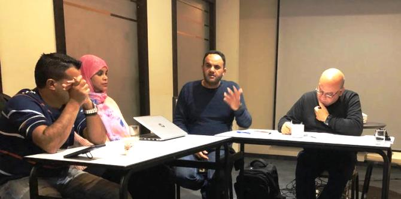

היום הראשון התמקד בלמידת החברה האזרחית הלא-ממוסדת בקרב המיעוט הצ'רקסי בכפר כמא.
זכריא נאפסו, ראש המועצה המקומית, שוחח עם העמיתים על תרבות החברה האזרחית המסורתית הצ'רקסית, המתאפיינת בחוסן קהילתי ובסולידריות חברתית.

ביום השני של הריטריט למדו עמיתי התוכנית על התפתחות החברה האזרחית ועל פעולותיה המגוונות בעיר נצרת. העמיתים קיימו מושב למידה בנושא "צורות שונות: תחנות בהתפתחות החברה האזרחית בחברה הערבית" בהובלת
מחמד זידאן, מומחה לחברה אזרחית ובהשתתפות יזמים חברתיים ששיתפו את עמיתי התוכנית בניסיונם במיסוד עשייה אזרחית במגוון תחומים: מנכ"ל סינמטק נצרת,
מחמד ביטאר; יזמית פרויקט "השמש לא תזרח לפני" – ספורט ואורח חיים בריא לנשים,
פדא טבעוני; יו"ר ועדת המעקב לחינוך הערבי,
עאטף מועדי; יזם "סנבדאא" – עשייה חברתית בת קיימא,
לואי עספור; ויזם "עוצמה קהילתית: ועדים קהילתיים מקומיים",
מחמד קיאל.

העמיתים הרחיבו את הידע בנושאי חברה אזרחית כבסיס לפיתוח תפקידה של החברה האזרחית בקרב האוכלוסייה הערבית-בדואית בנגב. אפשר לסכם במילותיו של
פרופ' אמל ג'מאל, בספרו "החברה האזרחית הערבית בישראל - אליטות חדשות, הון חברתי ותודעה אופוזיציונית": "לחברה האזרחית יש מופעים ארגוניים, אתיים, תקשורתיים ונרטיביים, שהשילוב ביניהם מאפשר מתן ביטוי לריבונות האזרחים על חלק נכבד של התנהלות חייהם. קיומו של מרחב אזרחי פעיל כזה, המורכב מארגונים וולונטריים, התאגדויות אזרחיות ממוסדות ותנועות חברתיות או עממיות לא ממוסדות הוא אפוא כלי חשוב להעמדת כוח חברתי כנגד כוחות השוק, שחותרים לשליטה גדלה והולכת, וכנגד סמכות המדינה, החותרת בהתמדה להרחיב את ריבונותה הממשטרת והכופה כאחד".

{kind=link}